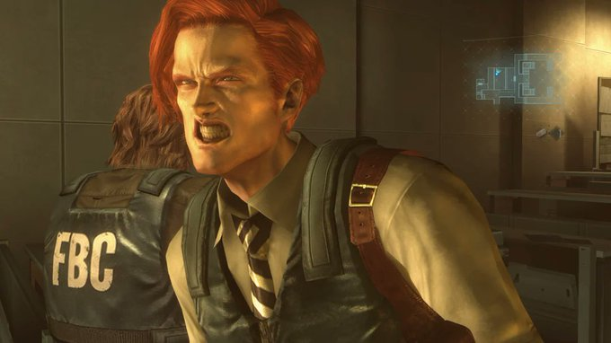

I love furries and I like the fandom but I think it's in decline despite it's rapid growth or I guess it could possibley be bc of it dont get me wrong there's lots of amazing things that have happend with the growth of the fandom but I think it's brought more negative things then positive things the drama is just non stop and I dont have a problome avoiding it now as an adult who is almost 20 now but for some reason ive seen the excuse that the internet has changed and the algorithms we use make us more prone to drama like no? you can just ignore it if it's serious enough you unfollow them but most of the time you dont have to interact with it at all you dont know these pepole even if they are breaking the law what power do you have to get them arrested? the best thing to do is to repeat what you have heard and to avoid anything from that person moving forward you dont have to have an opinion on it or feel any way about it no one is asking you to justify your actions right? it's a waste of time and it harms yourself emotionally to get worked up about it I firmly belive it's a discapline thing and I think the biggest part of being a furry is ecapism I know thats been repated by plenty of ppl but it seriously is there can be no argument againts it so why are we killing ourselves with these petty things now moving on to another thing that has bothered me is the politicization of the fandom I hate that were really asking ppl their opinion on such a serious and divisive topic and then getting upset when other ppl say they arent comfortable expressing their feelings about politics or that they dont have a stance to take in the first place I understand that we are a very queer centric community but that dosent mean that everyone should have a political stance to take and that it should be anything specific years ago most furries would turn you away and refuse to give their opions when asked about how they felt when it came to politics but now it's just normal to ask about it or even demand it from ppl if the furry fandom of the 90's and 2010's was perfectly comfortable with being apolitical at a time when queer rights werent around yet then why do we suddenly feel the need to be so outspoken now I really just hate it a lot and I mean that the last thing that I think I have problem with is how art in the community has gotten a lot darker not all of it but some of it I really think putting furry OC's in serious and gritty stories is not only silly but just stupid furries are the most unserious thing on the internet and it should stay that way it does not disturb me to see serious subjects approached in furry art it only pisses me off furries are cartoons they are fuzzy and cute so why are we hurting them? the gore and dark themes just feels wrong and out of place it does not feel right the fandom is meant to feel like an escape from the stressful and scary real world so why are you bringing all that negativity back here to brood in it I can ignore it but it's becoming common in the fandom so it's getting harder to avoid and honestly I have worked so hard to try and be a nicer person and to spread my postivity too it just makes me sad when I see other ppl in the fandom holding onto to negative subjects it's a fantasy it can be anything you want it can be so comfortable I just cant understand touching on things that the fandom was made to avoid the whole god-damn fandom has gotten too serious idk what happend but it seems like it used to be completley different I know it isint a big deal it's just the internet but I would have liked it to have stayed the way it was in the early to mid 2010's then maybe I would have actually went to a convention or something like that but probably not now

my childhood xbox 360 died it was kinda disapointing I dont think it's done for I can porbably get it fixed but it wont be anytime soon I made a post about this on twitter using the same image with a different size and format if you reverse image search it and find my account then I will follow you back if you DM me telling me this is how you found my account it can be an easter egg hunt!! a slight warning my account is definitely NSFW so keep that in mind it's not bc Im a gooner or anything but just bc I gave up on trying to seprate the SFW furry art from the NSFW art it's just so impossible I stopped letting it bother me idk why I cant sleep I think it might be the cat her asthma is so loud and she keeps trying to sleep in my bed and one of my other cats keeps being an asshole to all the cats I think im also awake in regret but there is no point in dwelling on that it's important to live in the present bc you cant undo the past but you can very easily predict the future I want mine to cotinue to get better I may move out next year it's something ive wanted for years but Im not sure how to feel about it ill definitely enjoy it but I dont know what to think about it if that makes any sense
investors are just scammers thats a dramatic thing to say but it feels correct in 2008 the banks that caused the fanacial crisis were bailed out by the governmemnt the government is meant to bail out the banks to keep the economy from further degrading but that was different then something like the panic of 1873 or the panic of 1893 those panics did or would have resaulted in a catastrophic faliure of banks the job of the goverment is to protect the economy from dipping into a recession or to prevent a recession from becoming a economic depression the investors and the big banks do not need to be bailed out the majoirty of the money that the U.S. spent to supossedly recuborate the economy in the 2008 fanacial crisis directly benifited the investors and creditors that helped cause it they faced no consuqences while so many regular americans were forced into forclosure or sale of their property and thats not mentioning how we paid that money back in taxes in the folllowing years if the 2008 recession was handeled in such an unfair way then whats to say it wont happen again when inevitabley our next fanacial bubble (investment in AI and space X) bursts what will happen? if they really did bail them out it would be an outrage right they arent as nesccsary as banks are we can survive without them to waste money bailing them out when we might be really suffering would just be despicable and totally unjustified this is gonna happen I feel like anyone who has been paying attention to what has been going on can tell I mean now with the budget deficit we could be really fucked and dont even listen to that propaganda all these ppl making vidoes about leaving the U.S. it's stupid this is not something you can just run away from they will completley destory us and they are proping these ppl up to convince you to leave bc they know if you stay then youll go out and do something about this they want you to feel like it's hopeless and it's not they dont care about us anymore they know the end is nigh and that once this is over they wont be in charge anymore they have throw caution to the wind they are preparing to leave us behind and we need to put a stop to it these ultra welthy ppl have gotta get out of politic s and suck it up and get taxed like they should have been from the very start they shouldnt be allowed to just buy the president and avoid all accountability this shit should have ended with obama it's inasne that were letting it happen again with donald trump just like the banks and investors we havent learned our lesson either and well be paying dearly for that and honestly it's a shame that I was too young to do anything about it